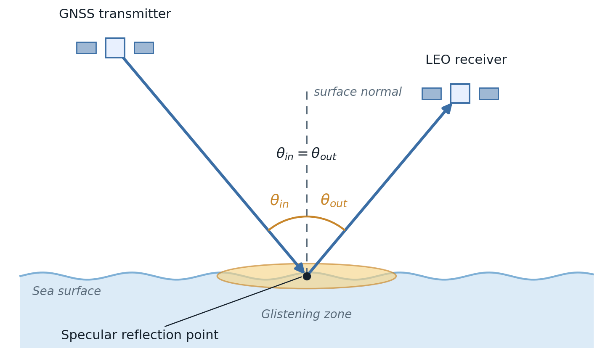

Specular (forward-scatter) mode¶
Summary¶
In specular mode the forward-scattered GNSS signal is received and analysed. The specular reflection point is the point on the sea surface where the angle of the ray coming in equals the angle of the ray going out.
The geometry¶


Fig. 5: Specular (forward-scatter) geometry. The GNSS signal reflects once at the specular reflection point and continues to the LEO receiver. The incident and reflected rays make equal angles with the surface normal (\(\theta_{in} = \theta_{out}\)), and the diffuse glistening zone extends to either side of the specular reflection point.¶
The specular reflection point obeys the law of reflection: the incoming ray and the outgoing ray make equal angles with the local surface normal. Writing the incoming and outgoing unit directions and the surface normal at the surface point \(S\),
with transmitter \(T\) and receiver \(R\), the equal-angle condition is
This point is located by the Specular reflection solver, which provides a closed-form solution for a spherical Earth and a two-angle stationary-path solve on the WGS-84 ellipsoid.
Around the specular reflection point the sea is not perfectly flat, so the reflection is not a single clean ray. The signal also scatters from a bright patch of surface either side of the specular reflection point, the glistening zone. That spread-out return is the heart of GNSS-reflectometry.
The sea return¶
The power picked up at the receiver follows the bistatic radar equation (Link budget),
where \(\sigma\) is the radar cross-section of the sea, supplied by Ocean target. In the specular direction the ocean model adds two parts: a clean coherent specular reflection (which only matters for very calm water) and the diffuse incoherent glistening-zone return (what you usually see).
Finding a ship¶
In specular mode a ship does not add a bright glint of its own (that forward glint is not modelled yet). Instead the ship shadows the small patch of sea it sits on: the glint that patch would have sent back is removed. So the thing to detect is a small drop in received power,
the sea-glint power over the ship’s waterline area \(A_\mathrm{ship}\) (length times beam). This signal is faint by design. The simulator reports it on its own, as a fraction of the full-footprint glint, and against the thermal-noise floor, with no flooring or inflation.
What you get out¶
Area coverage – a contiguous track-visit count per grid cell, per GNSS constellation, and a combined map (
OUTPUT/Coverage_grid_<CONST>.png). See Coverage.Moving-target detection – the shadow change \(\Delta P_r\) per band, reported against the noise floor in the link-budget breakdown, with footprint-overlap maps written as
OUTPUT/Footprint_overlap_specular_<CONST>_<band>_<contour>dB.png. See Moving-target detection.
Where it lives in the code¶
Module |
Role in specular mode |
|---|---|
Finds the specular reflection point and the incidence angle for each Tx/Rx pair. |
|
The sea radar cross-section (coherent specular + glistening zone). |
|
The bistatic radar equation that turns geometry and RCS into received power. |
|
Accumulates contiguous specular track visits over a gridded region (area-coverage mode). |
|
Matches reflections to the ship and computes the shadow metric (moving-target mode). |
Assumptions and limitations¶
No ship forward glint yet. The ship is seen only through the sea patch it hides, not through a glint of its own, so the moving-target signal in this mode is small.
Footprint-overlap candidate. The ship is associated by time and antenna-footprint overlap. Its own delay and Doppler are not compared with the reference bin.
First-order DDM singularity. At the exact specular point the present delay-Doppler Jacobian is singular and falls back to the antenna footprint. A small specular cell requires a second-order delay model that is not implemented.
Specular geometry. This mode locates the specular reflection point; the diffuse multipath and the exact extent of the glistening zone are handled by the ocean model, not resolved here.
Area coverage is geometry only. The band’s frequency and EIRP feed only the field-of-view gate, not a detection threshold, so the coverage result does not depend on the band – only on which constellations take part.
When to use it¶
Use specular mode for standard reflectometry coverage studies, and to compare against existing GNSS-R datasets. Set it with:
[REFLECTION]
reflection_type = specular
max_central_angle_deg = 45.0
References¶
Zavorotny, V. & Voronovich, A., “Scattering of GPS signals from the ocean with wind remote sensing application”, IEEE TGRS 38(2), 2000.
Born, M. & Wolf, E., Principles of Optics, 7th ed., Cambridge University Press, 1999 (law of reflection, Fermat’s principle).
Ruf, C. et al., “A new paradigm in earth environmental monitoring with the CYGNSS small satellite constellation”, Scientific Reports 8, 2018.